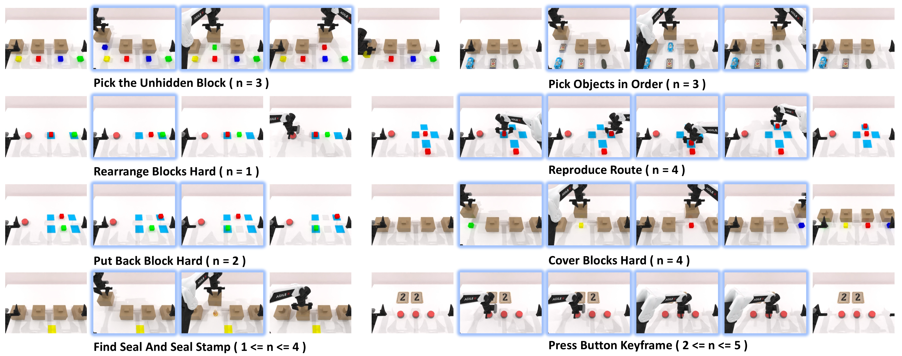

Event-Driven Memory Triggering
Detect task-relevant events and select informative keyframes instead of storing every frame.
Long-Horizon VLA for Robotics
EventVLA introduces event-driven visual evidence memory: the policy detects task-relevant events, stores key visual evidence as raw keyframe images, and reuses this memory while predicting actions.
Long-horizon robotic tasks often require recalling visually grounded evidence that appeared many steps earlier. EventVLA tackles this by coupling a vision-language-action policy with an event-driven keyframe memory mechanism. Instead of relying only on compressed latent state, it stores task-relevant visual evidence as raw keyframe images and retrieves them during action generation. This repository is released together with RoboTwin-MeM, a memory-dependent benchmark built on RoboTwin 2.0.
EventVLA and RoboTwin-MeM: model design and benchmark composition from the official repository.


Detect task-relevant events and select informative keyframes instead of storing every frame.
Preserve high-fidelity visual clues by directly caching keyframe images as reusable evidence.
Reuse selected keyframes at inference time to support long-horizon, multi-stage manipulation.
Evaluate memory dependence on eight challenging RoboTwin-MeM tasks with standardized scripts.
Hugging Face repository: ganlinyang/EventVLA
final_model/pytorch_model.pt, config.yaml, dataset_statistics.jsonDataset repository: ganlinyang/RoboTwin-MeM
hdf5/ trajectories and lerobot_2.1/ formatcover_blocks_hard and reproduce_routeconda create -n RoboTwin-MeM python=3.10 -y
conda activate RoboTwin-MeM
cd /path/to/RoboTwin-MeM
pip install -r script/requirements.txt
bash script/_install.sh
bash script/_download_assets.shconda create -n eventvla python=3.10 -y
conda activate eventvla
cd /path/to/EventVLA
pip install -r requirements.txt
pip install flash-attn --no-build-isolation
pip install -e .bash examples/RoboTwin-Mem/eval_files/run_policy_server.sh \
/path/to/checkpoint.pt 0 5840
bash examples/RoboTwin-Mem/eval_files/eval.sh \
cover_blocks_hard demo_clean pure_image_keyframe_memory 0 0bash examples/RoboTwin-Mem/eval_batch/run_batch_eval.sh \
examples/RoboTwin-Mem/eval_batch/weights_8tasks_pure_image_keyframe_memory_teacher_qwenoft.shOutputs include task-wise logs and a batch summary CSV.
EventVLA citation will be added after paper release.
@misc{eventvla2026,
title = {EventVLA: Event-Driven Visual Evidence Memory for Long-Horizon Vision-Language-Action Policies},
note = {Project page based on the public EventVLA repository},
year = {2026}
}Built on top of: RoboTwin 2.0, RMBench, StarVLA.